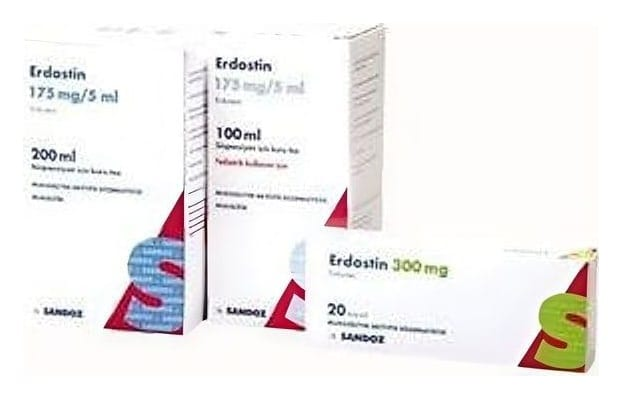

Erdostin Süspansiyon İçin Kuru Toz, 100 ml

Ne için kullanılır
KT · Bölüm 1ERDOSTİN, mukolitikler grubundan bir etkin madde olan erdostein içerir.
ERDOSTİN, 5 ml’lik plastik ölçü kaşığı ile birlikte, plastik kapaklı, 100 ml’lik işaret çizgisi bulunan bal rengi cam şişe içerisinde, sulandırıldığında 100 ml süspansiyon (katı-sıvı karşımı) verebilecek, 50 g karakteristik kokusu ve tadı olan, kolay akan, kuru, beyaz toz içermektedir.
ERDOSTİN, aşağıdaki durumlardan herhangi biri için kullanılır: Farenjit (yutak iltihabı), larenjit (gırtlak iltihabı), trakeit (soluk borusu iltihabı), bronşit ve bronkopnömoni (akciğer ile nefes borularının iltihabı) gibi üst ve alt solunum yolu enfeksiyonlarında balgamın atılması amacıyla Özellikle kronik bronşit ve kronik obstrüktif akciğer hastalığında (KOAH) solunum yollarında biriken yoğun kıvamlı balgamın atılması amacıyla